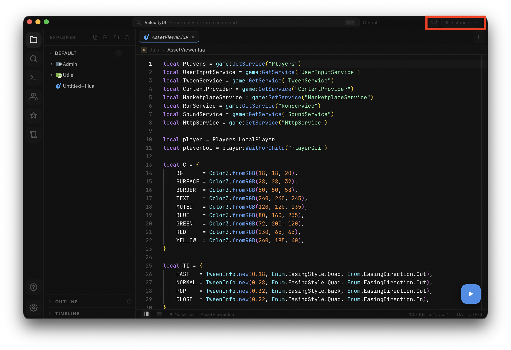

Multi-Instance
Target specific Roblox accounts and send scripts to one, several, or all of them at once, without re-pasting or switching windows.
How it works
Every account in the dropdown has a coloured dot. That dot is all you need to read before sending a script.

First-time setup
VelocityUI writes a script to your executor's autoexecute folder on first boot. That script is what registers each account with the UI when Roblox launches. Until that file exists, nothing appears in the dropdown.
Do this once, in this order:
Targeting instances
Click the monitor icon, then open the Instances dropdown. Each account is listed by username with its status dot. Click any account to toggle it as a target.
Running the script
Select your targets, then hit run or press Cmd Return as normal. VelocityUI sends to all selected instances at the same time, no delays.
Edge cases
Something not working? Find it below.